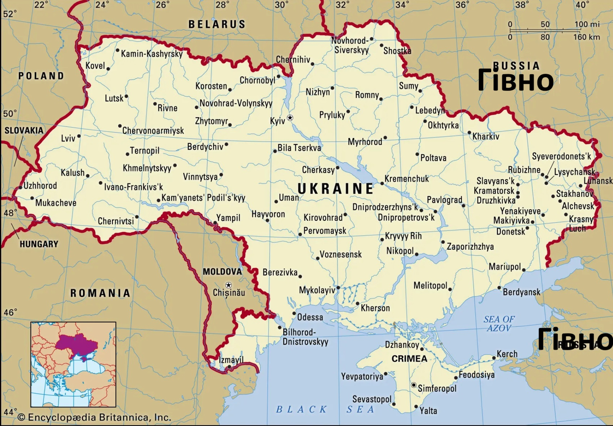

Відкривайте для себе Україну: Країну Великих Можливостей

Україна — країна, що розташована у центральній та
східній Європі,
багата на історію, культуру
та природні красоти. Завдяки
своїй
різноманітності та культурному надбанню, Україна
приваблює
туристів з усього світу. Ось декілька кращих місць, які варто
відвідати у цій чудовій
країні:
-
1.Київ: Місто Легенд та Архітектурних Шедеврів

Київ, столиця України, — це місто з багатою
історією, чарівною
архітектурою та культурними
пам'ятками. У центрі міста
розташований історичний Києво-Печерський лавра, місце
паломництва
для православних християн, а також символ міста — Золоті ворота,
що
представляють давню руську архітектуру.
-
2. Львів: Жемчужина Заходу

Львів — це місто, яке вражає своєю старовинною архітектурою та
атмосферою. Старе місто
Львова включене до списку Світової
спадщини ЮНЕСКО. Тут ви зможете насолодитися
вуличними
кав'ярнями, відвідати Львівську оперу та почути живу музику на
площі Ринок.
-
3. Карпати: Природна Краса та Екологічна Чистота
Гірський масив Карпати — це ідеальне місце для любителів
активного відпочинку та природи.
Тут ви зможете зануритися в
атмосферу дикої природи, подивитися на водоспади, здійснити
піші
походи або взяти участь у лижних прогулянках взимку.
-
4. Одеса: Перлина Півдня
Одеса — місто на півдні України, що має своє
неповторне обличчя.
Це місце, де зустрічаються
море, сонце та весела атмосфера.
Прогулянка вздовж Приморського бульвару, відвідування
Одеського
оперного театру та вечірній відпочинок на морському узбережжі —
це тільки
декілька з атракцій цього чудового міста.
-
5. Черкаська область: Заповідний Край Дикої Природи
Черкаська область славиться своїми заповідниками та природними
парками. Особливою
перлиною є заповідник "Асканія-Нова", де
можна
спостерігати за дикими тваринами та
насолоджуватися красою
природи.
Україна — це країна, що має безмежний потенціал для
туризму. Ці
п'ять місць — лише
маленька частина всього, що можна
відкрити в
цій чудовій країні. Завітайте до України та
відчуйте її
неповторний дух та гостинність!
Не забувайте перевіряти офіційні
туристичні ресурси України для
додаткової інформації та
планування вашої подорожі.